which is consistent with the classical input-output relations.
A non-classical result can be obtained by looking at the correlations between the output beams 2 and 3: Suppose that
there are photodetectors placed at the 2 exit ports 2 and 3 then the probability that both of them will detect a photon is
given by
*This can be calculated to be, with the help of Eqs. 1 and 2 and the fact that the fields 0 and 1 are independent
and so = 0 IFF = , i.e. the field consists 1 photon*, which would entail that it is impossible to detect a
photon in both the reflected and transmitted beam (because P23= 0) if we have a 1 photon state - a non-classical
behavior*
.
Another non-classical behavior can be obtained by looking at
*Hence, for subpoissonian statistics, we have negative correlations between the fluctuations of the transmitted and reflected
beams. For a coherent state, the correlations are equal to zero (use Eqs. 30). When the correlation between output 2 and 3
is positive, the phenomenon is then known as the Hanbury Brown-Twiss effect.
(Section 12.12.2 of [?])
2 Photon interference
Assume now that the input field is given by the state |10,11⟩ then using Eq. 1, we obtain that
which vanishes for a 50%:50% beam-splitter. This is also called the Hong–Ou–Mandel effect.
“This can be understood as follows. There are 2 different ways in which the situation with one photon exiting at port 2
and one photon exiting at port 3 can arise:either both incident photons are transmitted through the BS or both are
reflected from the BS. As the detectors observing the output cannot distinguish between these possibilities, the
corresponding two-photon probability amplitudes must be added before squaring to determine the probability. But because
of the phase shifts on reflection and transmission, the two probability amplitudes are exactly 180 degrees out of
phase*”
(Section 12.12.2 of [?])
1.2 Effect of a polarizer on a quantum field
Section 12.13 of [?].
1.3 Single Mode laser
The light emitted by a single mode laser can be modeled by a by a mixture of coherent states |v = r0eiθ⟩ having the same
value r0 but with the phases θ uniformly distributed over the range . (From section 11.8.6 - (b): The randomly phasedlaser model of [?])
1.3.1 Simple analysis of the light emitted by a Single Mode laser
In this simple treatment of the single mode laser, we will assume that it emits light at frequency ω0 described by the
coherent state |ξ⟩. We can write down the electric field in the following fashion:
with 0 being a constant (see Eqs. 20). Apply the transformation Ô→†Ô which leaves the physics invariant (see
section 5.1.2). Under this transformation, (using that = 2πδ)
*Let α= c1aδ, where c1 is a constant* then applying this transformation to the electric field operator, we
obtain that
*where it is most convenient to pick c1 to be π and hence
How do we pick ξ, and a? We can show that we must have that
where I0 is the time averaged optical power* for the electric field to be in the form
(Basis: [?] equation 2.15)
2 Standard Quantum Limit
In the context of interferometry or other optical measurements, the standard quantum limit usually refers to the minimumlevel of quantum noise which is obtainable without the use squeezed states. An example would be the Heisenberg
limit.
3 Quantized E&M
3.1 Free fields in free space (SI)
If the EM field is contained in a big cube of side L (and we impose periodic boundary conditions) then
(from [?] equ. 10.4-38-40) s indexes the polarization base vectors: ϵ1 and ϵ2 that satisfy
*In the infinite L limit we obtain something like
*
([?] equation 10.5-6).
3.1.1 The canonical conjugate pair/quantization procedure
The canonical conjugate operators that were quantized are
where uks= ckse-iωt can be interperted as the complex amplitude of the mode with wavevector and polarization index
s and cks is the projection of k along the polarization vector ks. k is defined from the general expression of the vector
field in a free field with no sources of sink:
The classical Hamiltonian can be written as
When quantized, p and q will satisfy
They can be expressed in terms of the creation and annihilation operators in the following way:
and so we can write that
*
(section 11 of [?])
3.1.2 Commutation relations in a continuum
If we have a continuum of modes then
*, and the ks are > 0.
(From [?] equs 2.143 and 2.144 of section 2.4.2)
3.2 Free fields in a cavity
In the schrodinger picture,
where ns denote the spatial modes of the cavity that are normalized to
*(see appendix A of [?]) and s = 1,2 indexes the polarization.
(section 2.4.1 of [?])
3.3 Momentum of the quantized field
From classical E&M, the total linear momentum P of the field is ∝ to the volume integral of the Poynting vector (see 19:
Howeover, this classical expression is not Hermitian (E and B do not commute). So we adopt the following symmetric
expression for the momentum of the quantized field:
Use the expression for E and B (Eqs. 8) to obtain after some tedious algebra that
which entails that Ĥ and commute for a free field* and so P would be a constant of motion.
(section 10.5 of [?])
3.4 A phase operator
Write the creation operator as
(this is in analogy with classical EM where the complex amplitude of a field is given by 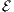ks= eiϕks). From now on,
assume we are working with one mode. The issue is that is not Hermitian and (equivalently ei is not unitary)*.
Howeover, if we make those assumptions we obtain the following relations:
*which turns out to be correct (see section 10.7.2. of [?]) and we obtain that
*These relations lead to the contradiction ⟨m||n⟩= iδmn.
(section 10.7.1 of [?])
3.5 Two-photon formalism
3.5.1 One photon formalism
A one photon device is that its output consists of independently excited modes with time stationary (TS) noise. Indeed, the
photons of a beam produced by a one-photon device are created one at a time means that the fluctuations in the electric
field are due to random emission of single photons which have various frequencies and phases. As a result, the fluctuations
at different frequencies are independent, and the fluctuations at each frequency are distributed randomly in
phase.
This can be formalized by saying that
where the denotes a classical statistical average, ΔE≡ E- and is the flux spectral density of the
e-field fluctuations (in dimensions of energy per area). Or equivalently, we can say that
i.e. the variance of the electric field is constant.
The formalism of one-photon optics is founded firmly on the annihilation operator as the fundamental operator and on
the coherent states as the fundamental quantum states. Quasiprobability distributions (QPD) such as the Glauber
p-representation (see sec. 5.8) is a convenient tool to describe one-photon devices but not necessarily 2-photon
devices.
(Introduction of [?])
3.5.2 Two photon formalism; introduction
Consider a light wave traveling along the + direction of the z-axis:
where u is the spatial mode shape (assume that it is slowly changing on a wavelength λ scale) and in CGS units
where is the effective cross-section area of the light beam*. Moreover, we have that
*Assume that the light consists mostly a monochramatic wave (with frequency ω0) with two sidebands defined by the
amplitudes:
The different parts of the electric field can be rewritten (in the approximation that ω0 is very large compared to the sidebands of the
light signal*1 )
to be
where
*and plays the role of a complex quadrature* and where
and
*. With the interpertation of as a complex amplitude in mind, we can obtain the amplitude and phase quadratures :
*( c and s are called the phase and amplitude quadratures, respectively, because in the classical limit they
correspond to amplitude and phase modulations*) where
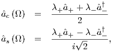
*and so we can say that
*The Fourier operators satisfy
*, which implies that ≠0 which will contribute noise to the final measurement result. However if the
photodetectors measure the photon number flux:
*then = 0 and there is no new noise*.
(section 3.1 of [?]: overview)
3.5.3 Spectral densities
They are defined in the following way
We can introduce the quadrature amplitudes matrix of spectral densities in the following fashion
Example for the vacuum state (in the limit that Ω ≪ ω0 - see commutations 22):
*
(section 3.2 of [?])
3.5.4 Covariance matrix of photon states
Similar to spectrial densities but defined in the time domain:
The delta function tells us that the noise levels at different times are statistically independent, i.e. the noise is
Markovian.
An example for a vacuum state:
Moreover, we can write that
where Ê= u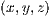0*.
(section 3.2 of [?])
3.5.5 Small sidebands approximation: Ω ≪ ω0 limit
If Ω ≪ ω0 then λ± of equation 18 is approximately equal to 1 and so
*. Since the carrier field is classical, it will be advantageous to write the electric field in the following form:
where âcsold→ Ac,s+âcsnew and Acs≡. Moreover, introduce the following notation
(section 3.1 of [?]: overview)
3.6 Positive-frequency and negative frequency field operators
Notice that the mode expansion of the EM field (Equs 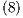) are of the form
The case when l= 1 corresponds to F- being a creation operator of a photon at the location (see section 1.2 of
[?] or section 12.11 of [?]; latter is much more oriented towards the subject of localizing photons). So this
operator is very important because most detection of photons happens by absorption via the photoelectric
effect.
Notice that the positive and negative field operators satisfy the wave equation.
([?] section 11.12)
3.6.1 Commutation relations
3.6.2 Other relations
([?] section 11.12.1)
3.6.3 Wave packets as fundamental modes
A wave packet is a linear combination of plane-wave modes
where the coefficients αmλ
are chosen to be the elements of a unitary matrix so that
and
where ĉm≡∑λαmλ*âλ* and they act as boson annihilation and creation operators:
*Because of these relations, excitations of the field corresponding to different mode functions um can be produced
independently.
([?] section 12.7.4)
4 Detection of photons and associated correlation functions
4.1 Photoelectric measurement of the optical field; simple treatment
Suppose we have a photodetector* located . We ask what is the probability of the detection of a photon (i.e.
absorption, by emission of a photoelectron, of a photon). Field operators (section 3.6) are well suited for
answering this question because they can be interperted as the operators that absorb/create a photon in the
vicinity of at time t. The operator corresponding to the detection of a photon of polarization s at , t will be
where lis kept general (e.g. if the detector interacts with the field through -p.A then F+ would the positive frequency
part of A (simple treatment of photoelectric effect in hydrogen can be found in section 18.5 of [?] or 15.3.3 of
[?])).
Let us follow a simple argument: the interaction is described by F+ and so the probability amplitude for the process of
absorption at time t and location r is given by the matrix element ⟨ψfinal|F+|ψinitial⟩ (see glauber photodector
theory for a simple detector model showing this) . In the case that we don’t postselect for the final state, then
we sum over a complete set of final states |ψfinal⟩. In the general case that the initial state is a mixture:
ρ =∑ψinitialp|ψiniitial⟩⟨ψinitial| we obtain that
where C1 is a constant characteristic of the detector, Δt is a short interval over which the rate of detection
does not vary appreciably and where the last equality comes from the defnition of a generalized intensity
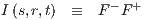
and the fact that I is normally ordered so we can use the optical equivalence theorem (see sec. 5.8.2). Note if all
polarization are included then we replaced F± with F± (and not add the probabilities).
([?] section 12.2)
4.1.1 Multiple photodetections
Consider the more general situation in which a number of photoelectric detections are observed. What is the joint
probability of all events?
Assume a number of photo-detectors located at r1,r2,... with polarizers in front of them as shown below. Assume there
are N detections orderred so that t1< t2< ... < tN and so the probability amplitude for the transition from the initial state
of the field |ψ1⟩ to the final state |ψ2⟩ is
We then proceed as in section 4.1 to obtain that the joint N -fold probability of photodetection for polarization s1 at r1,
t1 within Δt1 ... and for polarization sN at rN within ΔtN is given by
which again is a normally orderred correlation function. Again this arises because the fundamental measuring process
is a photon absorption.
Figure 2: From 12.2.1 of [?]
([?] section 12.2.1)
4.2 Photon density operator
The field operators F± with l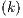 = 1 have a special significance and are denoted by
where V is the positive frequency operator. Consider the corresponding intensity operator I≡ V†V , which is
called the photon density operator because
*represents the photon number in the entire volume. The operator n=∫VId3r is to some extent the localphoton number operator (as long as the dimensions of V are much larger than an optical wavelength: in the
situation that we have a collection of points r1,...,rN that lie clearly (i.e. not defined to an accuracy better
than a few wavelengths) then n has eigenstates of the form V i1†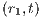...V in† with eigenvalue
where U is equal to 1 if r ∈ V and 0 otherwise; see section 12.11-0 → 4 of [?] for a
detailed analysis*).
4.2.1 Quasi Monochromatic light
In such light (where the frequency spread is small compared with the midfrequency) then l in the definition of the field
operators 26 is approximately a constant of the range of occupied modes. In such a case, all possible intensities I = F+F-
are the same up to a constant and in this case the mean photon density is a measure of the mean field intensity up to a
constant which we will determine below (for an example of a one photon polychromatic photon and how the above breaks
down see [?] section 12.11.5*).
Resultant simple interpertation of C1in equation 27: We can now ask what C1 is equal to for a detector which is
given by the model illustrated in Fig. 3.
Figure 3: From [?]
The measurement surface S of the detector is chosen to be very small so that the field looks like a plane wave* over S
which directly entails that in equ. 27 may be taken to be any point on the exposed surface S. This allows us to interpert
C1 to be of the form
where c is the speed of light. The term S ×cΔt represents the volume in which the photons can reside for them to be able
to reach the detector in time Δt (so photons outside this detector will not be detected). α is then the probability that any of
those photons will be detected and is called the quantum efficiency.
([?] section 12.3)
4.3 Second order correlation functions (Interference experiments)
Consider a simple interference experiment shown below
Figure 4: [?] figure 12.3
4.3.1 P-representation of interfering fields
In the Fig. 4, suppose that one laser sends a coherent state |v1⟩ and the other another coherent state |v2⟩. When both
excitations are present, the total excitation is characterized by
A general representation can then be written as
where ϕ≡∫ϕ12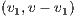d2v1=∫ϕ12d2v1 and the second equality is obtained by writing v = v1+ v2.
In an actual experiment, one or the other of the light beams can be blocked in turn (like in Fig. 4) so it must be possible
for the two excitations to exist separately:
If the two sources are indepedent then ϕ12= ϕ1ϕ2
([?] section 11.8.6 - (f) with example of a superimposed laser).
4.3.2 Analysis
What is the light intensity Î at r (see Fig. 4)? We have that
where the total field is described by the joint space functional ϕ12*. For approximately quasi-monchromatic and
plane-wave fields
where τ1= ∕c and τ2= ∕c are the propagation times from the pinholes to the interference point and
K1,K2∈ ℂ*. And so the cross-correlation terms appearing in equation 29 (3rd and 4th terms) can be written as the
following cross-correlation function:
* Now we can write
The generalization of Γ to multiple photodetectors will be of the form
*. If we include non-linearities then we might have more positive frequency field operators than negative frequency
operators or vice versa (see [?] section 12.5). The general form of Γ is
where a symbol xi or yj stand for a space coordinate rl, time tl and cartesian component il.
([?] section 12.4)
4.3.3 Cross spectral density
Useful fact: the spectral densities without repeated indices (i.e. N≠M) all vanish when ϕ is a functional only of the set
of moduli and vice -versa. The same holds for the correlation functions Γ.
([?] section 12.5.2-3)
4.3.4 Coherence
This is simply related to the visibility of the intereference fringes that are formed.
Coherence of up to an arbitary order is difficult to define ([?] section 12.6).
If we have second order coherence then higher order correlation functions are of the form
where the constant of proportionality is equal to 1 for a coherent state ([?] section 12.7.2).
A one photon pure state is second order coherent (γ= 1) ([?] section 12.7.2).
If only one mode is excited (ρ = ρk′s′∏ks≠k′s′|0ks⟩⟨0ks|) then all correlation functions are factorizable ([?] section
12.7.3).
A field satisfying the condition of second-order coherence must have a density operator of a particular form
corresponding to the excitation of a only one mode (not necessarily a plane wave mode) of arbitrary form ([?] section
12.7.4).
We have a stationary field if = 0. Moreover, if ϕ depends only on then we a sufficient (but not
necessary condition for stationarity) ([?] section 12.8.1-2).
Implications of stationarity to cross-spectral densities: ([?] section 12.8.3)
Analysis of Homogeneity (the expectation value of any operator that is a function of position is invariant
under translation of the origin of space): ([?] section 12.8.4). Analysis of isotropy is given in section
12.8.5.
4.4 Quantum Counter and anti-normally ordered correlations
A quantum counter works by emitting (by use of atomic systems) instead of absorbing photons (as in a photodetector)
which means it is less useful because it also measures the spontaneous emission of the atoms which are not
wanted.
([?] section 12.9)
4.5 Photon statistics
Let denote a definite set of photon occupation numbers,
where the second equality is the average of a product of Poisson distributions with respect to the phase space functional ϕ.
The result is a product of Poisson distributions for coherent states.
We can also show that the distribution for the total number of photons m is given by
This can also be written in the form
where PU=∫ϕδd and U ≡∑ks2.
([?] section 12.10.0-1)
4.5.1 Tests for non-classical states
Denote by Pe and Po the probabilities for an even and an odd number of photons then if Po> 1∕2 then we have a quantum
state without classical analog.
([?] section 12.10.2)
4.5.2 Moments of
Factorial moment generating function (for definition, see section 22.2.2): We have that
Therefore,
This result is true for any state so that we have
Moreover, we can show that
where the first term can be interperted as the variance of randomly fluctuating particles (like statistical counting error
∝) and to a certain extent, we have that the second term is like the variance of fluctuating waves (but for quantum
states it can be negative due to quasi-probability character of ϕ). A convenient way to characterize non-classical states is
with
which is negative whenever the statistics are sub-Poissonian and is at a minimum of -1 for a Fock state.
([?] section 12.10.3)
4.6 Homodyne detection
4.6.1 Classical analysis
See section 2.3.1 of [?]: Mediocre overview.
4.6.2 Scully treatment: Balanced Homodyne detection as applied to photon statistics
(section 4.4.2 of [?] - p.125)
Figure 5: Homodyne detection; The input field is superimposed on the field from a local oscillator (LO) at a lossless
beam-splitter of transmissivity T and reflectivity R such that R + T = 1.
The annihilation operators are denoted by
and the detectors measure c†c and d†d. Note that we have assumed that the frequency of LO is equal to the input frequency
so that there is no time dependence.
We assume that the transmissivity of the beam-splitter is close to unity:
only the photocurrent from detector 1 is measured and the LO mode is excited into a large amplitude coherent state
|βl⟩ with phase ϕl. We can then say that the fluctuations in the photon statistics of detector 1 are given by
*, where the first term is the reflected LO noise (LO shot noise) and the second term is less than 1∕4 if the input state is
squeezed (Xϕ= 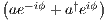∕2) (to see why go to 7.1; in the referred section Qβ= 2Xϕ). Hence, in practice the input
is first blocked to determine the shot-noise level then the input is turned to calculate the variance in reference to the shot
noise level.
4.6.3 Fabio treatment: Balanced Homodyne detection as applied to measuring quadratures
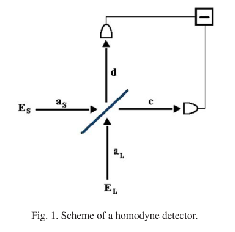
Figure 6: EL is a strong coherent laser beam and we assume that EL and ES are plane waves. Taken from Fig.
1 of [?]
The layout of such a scheme is shown in Fig. 6. Write the electric fields in the complex amplitude picture:
The action of a beam-splitter can be represented by a unitary transformation:
where η is the transmitivity of the BS and δ the phase shift between the transmitted and reflected waves*. Measure the
difference between the output intensities (see Fig, 6) to obtain that
We then use the fact that the local oscillator mode aL is nearly that of an intense coherent field of complex amplitude αL
and so we will replace aL with αL to obtain that
where ξ =argαL and Xξ-δ is the quadrature operator: Xλ= ∕*. Since the angles ξ (property of the
local oscillator) and δ (property of the beam-splitter) can be tuned and we know what η and αL are, we can measure
the expectation value of any quadrature Xλ. We can also measure the quadrature probability distribution
*
4.7 Heterodyne detection
4.7.1 Classical analysis
Section 2.3.2 of [?]: mediocre with not very clear explanations.
5 Coherent states
They are defined to be the right eigenstates of the destruction operator:
and as a result we have that
*Moreover,
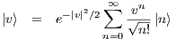
([?] section 11.2).
5.1 Displacement Operator
We call the displacement operator, the operator that creates the coherent state |v⟩ from the vacuum state |0⟩=|vac⟩:
([?] section 11.3).
5.1.1 The Displacement Operator for Continuum Fields
Consider the continuum description of the displacement operator - here we work with the commutation relation
= δ:
This can also be written in the equivalent form
*We can also work in the time domain with the transformation
and with this definition
We can also calculate that
*
(from [?] section II-A)
We now generalize some of the above results with a more general commutation relation: = c1δ and a
more general definition of the displacement operator
(for the above equation to be true, c1 and c2 would have to be related. Otherwise, |⟩≠c1,c2|vac⟩). As a
consequence, we now have that
*
5.1.2 The displacement transformation
The transformation
leaves the physics invariant*.
5.2 q-Representation
Let’s find the coordinate representation ψv of a coherent state |v⟩, where (section 8)
5.3 Time evolution and expectation values of elementary operators
The time evolution of a coherent state is given by
Note that this is another coherent state. Using the above relation we also obtain that
Note that these results are very similar to that of a harmonic oscillator. Indeed for a classical HO
([?] section 11.5).
5.4 Uncertainty relations
It is not to be deduced from the previous subsection or from the fact that = 0 (because the coherent state is a
right eigenstate of a) that a quantum oscillator in a coherent state behaves like a classical harmonic oscillator because we
have that = ℏ∕2 (which is a minimum uncertainty relation so in a way the real field behaves as close to a
classical field as possible). Also, for ≫ 1 we have that ≪2 (as can be seen from eq. 33 and it can be
easily calculated that from the definition of q that = ℏ∕2ω) so that the deviation from classical behavior for a
large coherent state is negligible. ([?] section 11.5).
5.5 Over-completeness and other properties
The coherent states are eigenstates of a non-Hermitian operator, so they have some unusual properties:
2= e-2≠δv1,v2. And so no two coherent states are ever orthogonal. Note that because of the
exponential e-2 (which takes on some of the character of δ2), most states are almost orthogonal.
Completeness - relation:
where d2v = dd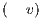is over the complex v-plane.
It can be easily shown that
The set is over-complete in that the set of states cannot be made exactly complete by substraction of a countable
number of coherent states from it.
([? ] section 11.6).
5.6 Normal order
An operator is said to be in normal order if it is expressible as a sum of products of creation and annihilation operators,
with the creation operators always standing to the left of the annihilation operators; e.g. ∑n=0∞a†nan+2∕n!. Let f
be such an operator then we can write
([?] section 11.6.3-4).
5.7 Unique representation and usefulness of over-completeness
An expansion of the form |ψ⟩=∫|v⟩⟨v|ψ⟩d2v∕π is not unique because of the relations in section 5.5 point 3. But ⟨v|ψ⟩ is
unique:
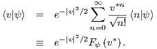
Fψ is an entire analytic function (i.e. has a taylor series everywhere on the complex plane) that is a representation of the
state |ψ⟩. The neat feature of entire functions is that uniquely determined by its values within some finite range - no matter
how small.
A representation for positive definite Hermitian and traceable operatorsÂin terms of coherent states: We have that
FA is also an entire analytic function and so we only need to know FA over a small range of v* and v′ to completely
determine Â. (In fact, ⟨v|Â|v⟩ for v in a small range is all we need ).
([?] section 11.7).
5.8 Diagonal coherent state representation of the density operator (Glauber-Sudarshan P-representation)
The density operator has a representation:
. ϕ is called a phase space density/weight function (and is sometimes denoted by P) and we have that ∫ϕd2v = 1.
If ϕ behaves like a normal probability distribution (i.e. is non-negative and is not more singular than the delta function)
then - by definition - we have a classical state of light (the idea is that coherent states are analaguous to a classical field of
complex amplitude v so a distribution of them is also classical). Another consequence of the definition is that
(ignoring the vacuum state for which ϕ= δ2), p (probability of n photons) is always > 0 for a classical
state.
([?] section 11.8-0,2).
5.8.1 Obtaining ϕ
One possible integral representation is:
where |u⟩ is a coherent state and e-uv*+u*v is like a Fourier Kernel (because of the e2 we have to be careful with
convergence; ϕ might be a generalized function).
([?] section 11.8.5; good examples in section 11.8.6).
5.8.2 Optical equivalence theorem
5.9 Anti-normal order
We have that for an anti-normally ordered function that
where
where denotes a set of all the possible modes. Q is mathematically well behaved (non-negative and bounded) but there
is little correspondance between it and the classical phase space function (but for states for which a classical limit exists, Q
and ϕ- the p-functional (see section 5.8) which would be exactly equal to the classical phase space function - tend to become
equal in the classical limit).
([?] section 12.9.3)
6 The Wigner Distribution
The wigner distribution is used to characterize the quantum state ρ in phase space and is defined to be:
where |q⟩ and |p⟩ denote position and momentum, respectively. It can be shown that for a Weyl-ordered
function (i.e. a function that is symmetric wrt to the order of the operators, e.g. pq + qp or q2p + qpq + pq2)
so that W acts like a ’joint probability distribution’ (but may not be necessarily positive or less singular than a delta
function); it is called a quasi-probability density and so is not directly measurable. We also have that for pure states
([?] section 11.8.1).
7 Squeezed states
7.1 Introduction/Definition
First, consider a specific case: Let
and so
Hence, they behave like dimensionless canonical conjugates and so
(Indeed, = iℏ and ≥ ℏ∕2). It can also be calculated by the definitions of Q′ and P′ that the relation is
exactly satisfied for a coherent state because then
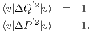
Figure 7: Schematic diagram of the uncertainty areas in the generalized coordinate and momentum (X, P) phase
space of a photon squeezed state (ellipse) and a coherent state (circle). In quantum optics, X and P are the two
quadratures of the electric field. Notice that the coherent state has the same uncertainty area as the vacuum state
(circle at the origin), and that its area is circular, while the squeezed state has an elliptical uncertainty area.
Therefore, in the direction parallel to the θ/2 line, the squeezed state has a smaller noise than the coherent state.
Image Source: X. Hu, Quantum Fluctuations In Condensed Matter Systems, UM Ph.D. Thesis 1997, Page 5.
General quadratures can be accomodated with the definition
These also satisfy = 2i.
Definition of a squeezed state: ∃ a direction β such that is smaller than that of the corresponding vacuum state,
i.e. < 1.
([?] section 21.1).
7.1.1 Interpertation through the electric field picture
The electric field for a single mode (single frequency), linearly polarized field is
where lis some real function of frequency ([?] section 11.5). From the definitions (34), we can then write that
The visual representation of a coherent/squeezed state is shown below:
Figure 8: In the above, take X2= P′ and X1= Q′. Taken from [?]. Moreover, (b) can be thought of as a reduced
amplitude uncertainty squeezed state while subfigure can be thought of as a squeezed state with reduced phase
uncertainty.
7.2 Mathematical treatment of single mode squeezing
Consider the squeeze operator
We shall study |z,v⟩ that is the eigenvector of the unitary transformation of a by S (it is called the the two-photoncoherent state):
r is called the squeeze parameter. Turns out that
([?] section 21.3)
The dispersion of the quadratures defined in equs. 34 is at a minimum for β = θ∕2 at which point
Notice that this is a minimum uncertainty state: = 1.
([?] section 21.3.1)
It can also be shown that the squeeze operator acting on any quantum state (ρ → SρS†) reduces the dispersion of Q by
the same factor e-2r.
([?] section 21.3.2)
7.2.1 Ideal squeezed state
The normal squeezed is obtained by having acting SD on the vacuum state. The ideal squeezed state is obtained by
acting DS on the vacuum state and has been called such because of its simple properties. It is denoted by
They are related to the two-photon coherent state by
The last two relations illustrate the simplicity of the ideal squeezed state: the ellipse in phase space characterizing |⟩ is
centered on v while |z,v⟩ is centered at v-.
([?] section 21.4)
7.2.2 Photon statistics
([?] section 21.4)
8 Quantum Harmonic Oscillator/ladder operators
We can then think of and as the real and imaginary parts, respectively, of the complex amplitude â. We can then
write
The following relations are also useful
If f is of a complicated form (example not in normal or anti-normal order) then write it’s taylor series (see example in
note)
8.1 Differential form of ladder operators when acting on coherent states
[?] section 12.9.2
9 Linear Quantum system
By defnition, such a system has a hamiltonian that is at most quadratic in its canonical coordinates and momenta. Hence,
the most general hamiltonian can be written in the form
and we further impose that L2 be symmetric*.
We then have that
where the subscript H denotes the Heisenberg picture and Cjl≡ is a c number denoting the commutator
between canonical operators*. This has a solution of the form
*.
(From [?] appendix)
9.1 Linear observables and important results
It is defined as any linear combination (either time dependent or time independent) of the canonical coordinates and
momenta of a linear system, plus a possible complex number (C number):
*, which is a c number and hence, in the Heisenberg picture, the commutator of the operators of any two linear observablesat two times is a C number.
(From [?] appendix)
9.2 Linear system subjected to a classical force
The interaction term between a quantum linear system and a classical generalized force G is given by
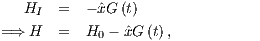
then for any linear observable Â, we have that
where ÂH is the Heisenberg picture of  under the action of H0 alone and CAx is a c-number called the time-domainsusceptibility and is given by
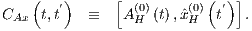
*.
(From [?] appendix)
9.3 Two indepedent linear systems
Call them (e.g. the probe) and (e.g. the detector) and suppose they interact by
then for any linear observable  of the system and of the system , we have that
where
*.
9.3.1 Fourier domain formalism when the zeroth order hamiltonian is time independent:
In this case, we have that
where Â=∫-∞∞dteiΩt and RAB is the susceptibility in the Fourier-domain:
*. In addition, we have that
* and we have that
*
(From [?] appendix)
10 Quantum Limit on measurements
10.1 Simple argument for deriving the standard quantum limit (SQL) of a free particle
Suppose we do a couple of quick measurements of the position of a particle with each measurement separated by a time τ.
Say at time 0, the particle’s position is measured with error Δxmeasure,1 then
After time τ this would cause a back action on the second position measurement:
which will superimpose with first measurement error. The momentum can be measured by
What is the optimal accuracy ΔP? Using equ. , it is easy to calculate that ΔP is at minimum for
Δxmeasure,1== Δxadd. Sor for Δxmeasure,2 negligibly small, we arrive at the standard quantum limit for ΔP:
([?] section 1.4).
10.2 SQL for the energy of an oscillator
([?] section 4.1)
11 Quantum Measurements
11.1 General Conditions defining a measurement system
“Following Braginsky and Khalili [?], we define a measurement process as a transformation from some original classical
observable which is unknown, e.g., the gravitational-wave amplitude, into another classical observable which is known,
e.g., the data stored in the computer. Generally, the system which implements this process is composed of a
probe , which is directly coupled to the classical observable to be measured (for interferometers this is the
antisymmetric mode of motion of the four arm-cavity mirrors), and the detector , which couples to the probe and
produces the output observable (for interferometers this is the optical system and the photodetector). When
quantum-mechanical effects are significant in the behaviors of the probe and the detector, the overall device is called a
quantum-measurement device. The output observable Ẑ= + contains a classical part , which depends on the classical
observable G to be measured, and some quantum noise due to the probe, the detector and their mutual
interaction.”
(From [?] section II.A.)
11.1.1 Condition of simultaneous measurability
“According to the statistical interpertation of quantum mechanics, the output of a quantum-measurement process at
different times is simultaneously measurable” and one sufficient condition is that the Heisenberg operators of the output
observable, Ẑ, satisfy
(Originally introduced as the definition of QND observables).
This is equivalent to requiring that if the the quantum-measurement device (QMD) is coupled to an external system
then the back action on the QMD does not alter the evolution of the output observable Ẑ, i.e. it does not respond to
external perturbations directly coupled to it (proof given in [?] section II.A). I.e. any external coupling to the measurement
system through Ẑ should not change the evolution of Ẑ itself.
(From [?] section II.A.)
“This condition also guarantees that no other quantum noise is necessarily introduced into the measurement result once
further manipulations are performed on the output.” (From section 2.7 of [?]).
11.2 Example of a linear optical position measurement
Figure 9: From [?]
The setup of the measurement is shown in Fig. 9. F is the number of times the pulse reflects from the test mass M. We
assume that the mirror from which the pulses reflect off of has a mass that is large enough to neglect the effect of the pulses’
radiation pressure on its position. The position x of M is measured periodically with time interval ϑ. The initial (random)
phase j of pulse j (assume that = 0), where j ∈ ℤ is the pulse number, is modified as the pulse reflects off the
mirror:
where kp≡ ωp∕c and ωp is the frequency of light*. Note that jr is the observable measured by the detector. For
convenience, rewrite this equation to be
where fl= -j∕2Fkp posseses an RMS uncertainty of Δxfl= Δϕ∕2Fkp, where Δϕ = , and it
represents the measurement noise*
. Assume that the noise introduced by the detector is negligible so that Δϕ dominates and so
*Upon each reflection, each light pulse transfers a back-action momentum to the test mass equal to
where jafter is the momentum of the light pulse after being reflected F times and j is the energy of the jth pulse*. The
random part of this back-action, which cannot be compensated for, is equal to
where = 2F∕c* and so the RMS uncertainty is equal to
The energy and phase of each pulse are canonically conjugate observables that obey
Suppose a pulse measures the position of the test mass every ϑ over a long time interval T such that
Use the results of all the measurements to refine the precision of the test-mass position x estimate:
where ΔxT is the uncertainty in the position of the test-mass after a time interval T and Δxmeas is the uncertainty after a
single pulse. At the same time, the accumulated random kicks the object received from each of the pulses’
random kicks, result in a random change of the object’s momentum similar to that of Brownian motion,
and thus the uncertainty in the object’s momentum increases in the same diffusive manner (like in Eq. 72):
In the continuous measurement limit, we assume that the interval between measurements is infinitesimally small (ϑ → 0;
the sequence of individual pulses transforms into a continuous beam) and that each measurement is infinitesimally weak, i.e.
Δpba→ 0 which implies through 48 that Δxmeas→∞. We need more adequate parameters to characterize a measurement
than Δxmeas and Δpba*. Instead use,
In the continuous limit, the observable measured by the detector (given in the discrete limit by Eq. 43) becomes
It is convenient to define the following quantities
*then from expression 49, we we can interpert Sx as the double-sided power spectral density of the measurement noise
introduced due to fl* and Sϕ as the power double-sided spectral density of .
We now need to take the continuous limit of 45. We would like to write it in the following form
where fl is a continuous Markovian random force, defined as the limit of the discrete markov process:
where Î is the operator defining the optical power*
. The double-sided power spectral density of is SF and that of Î is S. Assuming that Sx and SF are uncorrelated, we
obtain the following relation
* It is useful to remember the approximations we made in this analysis:
Energy and phase fluctuations in each of the light pulses are uncorrelated: = 0*, i.e. these
noise sources are not correlated.
All pulses have the same energy and phase uncertainties Δand Δϕ, respectively*
.
The pulses are independent from each other (i.e. we have Markovian (white) noise*
.
We will call simple quantum meters measurement setups that obey the first 2 features (non-correlated and stationary
noise).
(From section 4.1.2. of [?])
Simple example: Light in a coherent state
Assume the laser light to be in a coherent state with classical amplitude Ac with the phase quadrature As= 0 (and so
= 0). Let v = cϑ then
*where = v02Ac2∕= 0ϑ is the mean pulse energy and 0= * and
where ϑ≡∕*.
Define a phase for each pulse by using that s= 0sinϕ0 (Relation 76) where 0 is the maximum amplitude of light.
Then if we assume that = 0 and that ≪ 1 then we have that
where Ŷϑ= ∕ and = i*. Moreover, for a coherent state, we have that
*and hence we obtain that (using Eqs. 52, 51, 44, 46)
11.3 Equations of motion of a linear quantum-measurement system: The force-susceptibility formalism
11.3.1 No External environment added
Figure 10: From [?].
The probe is coupled to the external classical force G by -ŷG where ŷ is some linear observable to the probe. The probe
and the detector are coupled by -. In general, and ŷ do not have the be same. However, in this section, we assume
that they are.
Let the probe have its Hilbert space be and that of the detector . Then
where we treat as the zeroth order Hamiltonian and - as the interaction term. We thus obtain the
following equations of motion in the time domain:
where CAB≡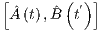 and the superscript (1) denotes time evolution under the total Hamiltonian, the
superscript (0) denotes time evolution under zeroth order Hamiltonian, while the superscript (G) refers to the time
evolution under Ĥ-G*. Moreover, we have that =+∫-∞tdt′CxxG*, where
Cx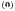x= Cxx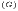*. We thus obtain that
Denote ∫-∞tdt′CxxG, which is the displacement induced on a free probe by G, by ξ and assume
that Ĥ and Ĥ are time-independent then we obtain that
where RAB=∫0∞dτeiΩτCAB and as a shorthand in this section RAB≡ RAB*.
(From [?] section II.B which also contains notes on how to take care of 1∕’s poles).
11.3.2 Adding an external environment and obtaining conditions on the susceptibilities involving Z
First, let us consider the simplest possible external coupling: 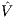 = -Ẑ, where is a classical external force. We now have
that
We follow the same logic as the previous section to obtain that
For the evolution of Ẑ not to be changed by the external coupling (if whatever the probe is, Ẑ always corresponds to the
output of the linear measurement device), we require that CZZ= 0 ∀t,t′ and CFZ=0 ∀t > t′RZZ= RFZ= 0*.
These conditions can be written as
(From [?] section II.C)
11.3.3 Normalizing the output observable Z
It is standard to normalize the equations 54 so that the factor in front of ξ is equal to 1. Hence, we obtain the following
normalized Ẑ:
where ≡Ẑ∕RZF, ≡- RFFẐ∕RZF, which in the time domain
Thus, we can also obtain
We can also obtain that
From these two relations it is like at each instant of time we have new canonical momentum and coordinate degrees of
freedom. Each instant of time describes an ’effective’ monitor (probe-detector measuring device). However, these monitors
are not necessarily independent as for example, in general, ≠const.×δ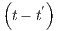, i.e. there exists a correlation
between the operators at different times. In this description, describes the quantum fluctuations in the monitors’
readout variable (as it is a quantum operator that will intrinsically have a non-zero variance; e.g. in an interferometer this
noise will be the shot noise). Furthermore, looking at the expression for Ô (eq. 56), we can say that the second term
corresponds to the effective response at time t to the monitor’s back-action force at earlier times t′< t. The
Cxx term means that this back-action term depends on the probe, as expected. Because of that, we
refer to as the back-action force. The third term in Ô corresponds to the free-evolution of the probe’s
coordinate and the last term is the displacement induced on the probe by the classical observable we want to
measure.
It can also be shown that = 0 as wanted (we want simultaneous measurability).
(From [?] section II.D)
11.3.4 [?] treatment
Figure 11: From [?]
The setup is shown in Fig. 11. This is the same as the setup presented in 10 except that now Ô∝+=Ẑ.
Using Eqs. 53 with ,we obtain the following for the equation of motion for the operators of the linear system:
*
11.4 Indirect measurement
It is a two-step process: The quantum object we which to measure interacts with a quantum system (called the
quantum probe) that has been prepared in advance in some special initial quantum state. The second step is a
direct measurement of some chosen observable of the quantum probe (and so its quantum state is reduced
and because of its correlation with the quantum object, there is a corresponding reduction of the object’s
state).
We can also write a formal theory: Assume the first step described above ends before the second step
begins and that the second step contributes negligibly to the error of measurement. Let the initial state of
the probe be ρprobe and of the object ρinit. The corresponding state of the probe after the interaction is
Denote by |q⟩ the state the probe is in after the second step (which is inferred by obtaining an eigenvalue q
from a precisely measured observable). The probability distribution for the result of the measurement is
where Π≡ Tr. The back action of the entire indirect measurement is embodied in the object’s final
state, which is
Writing ρprobe=∑j|χj⟩xj⟨χj| allows us to obtain that
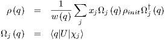
, whichis a mixture of states and so has additional uncertainties.
([?] section 3 with examples http://faculty.wwu.edu/vawter/PhysicsNet/Topics/Capacitors/ParallCap.html might help
with understanding EM parts).
12 Quantum Noise
12.1 Spectral densities in quantum measurements
12.1.1 Calculating spectral densities of quantum noise in linear optical measurements
If the readout quantity of a meter is linear (in Fourier space; measurements aren’t usually instanteneous) then it’s most
general form is given by
where is defined in 25, Ĥ= characterized how light is transformed by the device, G is the spectrum of the
measured quantity and so Y represents the quantum noise in the system. Note that Hcs is a real valued function of
the variable s = iΩ*.
Define the double-sided power spectral density SY (a measure of the quantum noise) by
(Note that the spectral density can be defined differently*) For example, the power spectral density of a vacuum state is
given by
* and for a squeezed state |r,ϕ⟩ we have
We might also be interested in calculting cross-correlations between H and some other quantity Z with quantum noise
defined by
then simply
For example, for a vacuum state we obtain
and for a squeezed state |r,ϕ⟩
(Section 3.3 of [?])
Generalization to the readout of many indepedent incoming EM fields
In reality, the readout observable of detectors can be a combination of indepedent EM fields (e.g. a GW
detector measures a combination of the input light field and vacuum field). Let 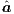i stand for the quadrature
amplitude vectors of N independent EM fields then now the output observable of the detector can be written
12.1.2 Double sided versus single sided spectral density
The connection between the two spectral densities is given by
where So+ is the single sided spectral density and So the double sided spectral density.
12.2 Examples
12.2.1 Free space example
Figure 12: From [?]
See Fig. 12 for the setup. We assume that the laser’s input optical field is a single mode coherent state and so
we can write it’s electric field in the (unnormalized) form (Eq. 7 without the normalization constant0 )
and the output field is simply given by
where τ = L∕c is the time taken to reach the test mass in its rest position and
where we have assumed that the displacement of the test mirror (and its uncertainty) is small and so we can Taylor expand
Êout (note that we make the assumption that ω0L∕c = nπ with n ∈ ℤ)*. The equation of motion of the system is given by
where G is a classical force and the radiation pressure force is given by
*where we have assumed that amplitude and phase fluctuations are small. The DC component 2I0∕c can be neglected in the
analysis of the noise as it can be compensated for*.
To solve this problem, work in Fourier space:
where = T, = T and
* We can identify G as and Δ2= eâ2- eκâ1. We identify the first part as the shot noise:
sh= e2iΩτâ2, which arises from the phase-quadrature fluctuation of the input optical field and has a flat spectrum
2 for a
vacuum state:
*and the second term is a the radiation pressure noise rp≡-e2iΩτκâ1 which has the following noise spectrum
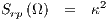
Because we have a coherent state, the amplitude and phase-quadrature fluctuations are not correlated* and so we can
obtain the total noise spectrum by summing up Ssh and Srp: Stot= Ssh+ Srp but in reality we usually would like to
measure G directly so we normalize ...
12.2.2 Tuned Fabry-Perot Cavity
Figure 13: From [?]
See Fig. 13 for the setup. The mirror has transmissivity T and reflectivity R. We assume that we have a symmetric
mirror that inflicts a π phase shift on its input side*
and so its scattering matrix is given by (Eq. 79)
Let the bosonic operators associated with Ein′, Eout′, Ein and Eout be , , and , respectively. And so we obtain from
62 that
13 Interferometry
13.1 Interferometer as a weak force probe
13.1.1 Light phase as indicator of a weak force
Section 2.1.1 of [?]: fairly clear and simple to understand.
13.1.2 Michelson interferometer
Directly measuring the phase of light is difficult so one has to resort to interferometry techniques.
2.1.2 of [?]: quick summary with trick to improve sensitivity: introduction of some constant small bias δL0 between the
arms lengths.
13.2 The Sagnac ring interometer
Section 4.1.2 of Scully’s quantum optics (p.101) - Fairly self-contained and clear.
14 Quantum optomechanics
14.1 Red/Blue detuning laser cooling
The getting to zero section (and figure 2) of [?] contains a nice and simple explanation.
17 Maxwell’s Equations and constitutive relations (SI)
In SI they are
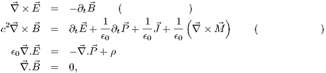
where ρ is the free charge density and the remaining vector fields are given by the constitutive relations:
where σ is the conductivity tensor. Assuming instanteneous , linear and local responses, we have
where e is a second rank tensor referred to as the electric susceptibility and represents the response of a material to an
applied electric field. Moreover, m is a second rank tensor referred to as the magnetic susceptibility and
represents the response of a material to an applied magnetic field. and are the total fields in the
material.
(Section 1.1 of [?])
17.1 Units (SI)
18 Energy
18.1 Poynting’s theorem in non-dispersive media (SI)
Let
which is referred to as the Poynting’s vector and gives the magnitude and direction of the power flux or irradiance/rate of
energy transfer per unit area. Then
*where
are the energy densities associated with the electric and magnetic fields, respectively.
(Section 2.1 of [?])
18.2 Intensity/Irradiance (SI)
The tim averaged Poynting vector or irradiance or intensity is given by
where is the unit vector along the direction of plane wave propagation. Note that this time-average makes sense because
in general detectors cannot respond to very high frequencies ... or it is equivalently that the response time of the atoms
forming the detectors are too slow
For plane waves in a dispersionless medium, we have that
E0~ 30 and so a 1 W∕m2 plane wave has an associated peak field strength of 30 V∕m.
(Section 2.2 of [?])
19 Momentum
Expression for the 4-momentum: Eq. 32.6 of Landau’s classical theory of fields.
Part III Classical Mechanics
20 Brownian Motion
20.1 Continuous Markov process and the Langevin equation
A continuous Markov Process (continuous memoryless stochastic process) X has to have the form ((standard form)
Langevin equation):
where A is called the drift function, D is called the diffusion function, and Nis a temporal uncorrelated unit normal
random variable, i.e., N=N and N is statistically independent of N if t≠t′ (proof is given in the appendix
of [?]). The above equation can also be written in differential form by noticing that N∕dt1∕2=N. Defining the
Gaussian white noise process by
to obtain that
This is the white noise form of the Langevin equation [?].
20.2 Langevin’s approach to Brownian motion
Hypothesize that the net force exerted on a Brownian particle in the x direction at time t by surrounding
fluid molecules can be resolved into two components: (i) a dissipative drag force -γv, where v is the x
component of velocity and γ > 0 the drag coefficient, and (ii) a zero-mean, temporally uncorrelated randomly
fluctuating force F, which is assumed to be statistically independent of v for all t′≤ t (a force F in the
future is not going to affect v at the present time). Newton’s equations give (after dividing by the mass m):
If we define τ ≡ m∕γ and require that F= mc1∕2Γ, then resembles the white noise Langevin equation (Eq. 70):
and specifically the Ornstein-Uhlenbeck (O-U) process ([?] section D). Note that the form of F is not an additional
assumption because the definition of F as a zero mean function that is uncorrelated with v for t′≤ t
implies a continuous Markov process (v has to be a ’continous’ random variable) of the form 70. To find the
expressions of τ and c we note that the velocity of the particle must be Maxwell-Boltzmann distributed:
v=N. Moreover, the displacement of the particle must exhibit the experimentally diffuse observed
behavior:
(note that this is mathematically true if τ is very small from a macroscopic viewpoint - just invoke the zero-tau theorem -
[?] section E). These observations have to match the solution to an O-U process, obtaining that τ = DM∕kBT and
c = 22∕D [?]. Recalling the definition of τ we obtain that γ = kBT∕D. Moreover, we have that
This is called the fluctuation dissipation formula: the fluctuating force is an increasing function of γ
and vanishes IFF γ vanishes. The above equation implies that = 2kBTγδ and so
Another important integral equation is the auto-covariance formula for the diffusion coefficient:
We can also calculate the equilibrium mean power dissipated by the Brownian particle via the three orthogonal components
of the drag force:
We can also use the O-U theory to obtain the frequency spectrum of the equilibrium power:
Part IV Mathematics
21 Dirac delta function
(From Wikipedia)
We can also write that
*
22 Statistics
22.1 Transformation of variables
“We are often interested in the probability distribution, g, for random variables Y = = h, given the
probability distribution, f, for the random variables X = . If the Y i′s are linearly independent, the new pdf
for Y is simply found by:
where is the absolute value of the Jacobian determinant. Hence,
24.1 Plane Wave description and some important terminology
We can describe a plane wave in many different ways:
where ξ = t - x∕c and 0 and ϕ0 are called amplitude and phase (and the first equality is the ’amplitude-phase’
representation), c and s are the cosine and sine quadrature amplitudes and is called the complex amplitude. The sine
quadrature is also called the phase quadrature (to see why refer to section 26.1.2). The different pictures can be related in
the following way
Because of the nature of the wave, we only have to study it at one point in space, say for x = 0 (E) then the electric
field at another location can be related to E. For the complex amplitude representation, we have that
and in the quadrature representation, we have that
where ϕL= mod 2π and ℙ is the 2D rotation matrix.
(Section 2.2.1 of [?])
25 Stokes reciprocity relations
They are given by
where the reciprocity relations connect the complex reflectance r and transmittance t of a nonabsorbing beam splitter with
the corresponding quantities r′ and t′ for light incident from the opposite direction.
25.1 Derivation of Stokes reciprocity relations
Consider the setup shown in Fig. 14 where a monochromatic plane wave of unit complex amplitude (i.e. 2= 1) is
traveling from point A towards the beam splitter (BS) at an arbitrary angle from the normal of the beam splitter. The wave
goes through the following steps:
let ϕ0 be the phase shift experienced by this plane wave when it arrives at point P.
The beamsplitter gives rise to a reflected wave at point P (of complex amplitude r) and a transmitted wave
at point Q (of complex amplitude t)
The reflected wave R1 travels to mirror M1 from which it experiences a phase shift equal to ϕ1 when it
is reflected and arrives back to P (i.e. it had followed the path PC+CP).
The transmitted wave T1 travels to mirror M2 and experiences a phase shift equal to ϕ2 when it is
reflected and arrives back to Q (i.e. it had followed the path QB+BQ).
The returning waves on contact with the BS give rise to reflected and transmitted waves of complex reflectance
and tranmittance given by r′ and t′ for T1 because it is impinging on the right and r and t for R1
because it is impinging from the left*. Let EA and ED denote the electric field that leave points A
and D, respectively. Assume that ϕ3 is the phase shift corresponding to the path from Q to D. Then
Figure 14: The beam splitter is a parallel side beam splitter meaning that it’s refractive index is a function only
of the coordinates perpendicular to its face which are either discrete or continuous (i.e. the BS may be stratified
or continuous). To ensure that a plane wave incident from one side emerges as a plane wave traveling in the same
direction, we shall suppose that the same medium (e.g. air) is present on both sides of the BS. Moreover, the mirrors
M1 and M2 are assumed to be perfect mirrors. From [?]
The incoming light indensity is given by 2= 1 so by energy conservation we must have that
where
*The phase shift 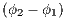 can be made arbitrarily small or large (by varying the position of B and C).
2+ 2 are independent of the phase shift so they can be considered equal to a constant.
Moreover, for the above equation to be satisfied then the 3rd and 4th term must be equal a constant (as the 1st and 2nd
terms are constants) so
We know from physical arguments that 2+ 2= 1 (energy conservation of a beam after it hits a BS). so
Try the solution
then we must have that the cosine terms sum to 0. Then use the trig identity that
to obtain that
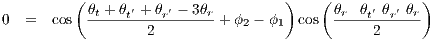
which can be solved for any ϕ2- ϕ1 by letting θt+θt′-θr′-θr= ±π and so
where we have used the assumption that = .
(from [?])
26 Modulation
26.1 Modulation of plane waves
For this section, we assyme a plane wave of the form (with no phase)
(Section 2.2.2 of [?])
26.1.1 Amplitude Modulation
Simple example: The modulated wave would look like
where ϵm≪ 1 is called the modulation depth, Ω ≪ ω0 and ϕm is called the relative phase. We can also write
The two other plane waves are called the modulated sidebands with amplitudes Aω0±Ω= ϵm0e∓iϕm∕2. Generalization: This can be generalized to an arbitrary periodic modulation function A=∑k=1∞Akcos
and to an arbitray real modulation function A=∫-∞∞Ae-iΩt:
*.
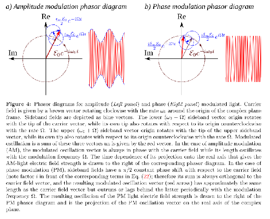
Figure 15: From [?]
26.1.2 Phase Modulation
Simple example:
where the phase deviation δm≪ 1 and in this limit
and so for a weak modulation, only the sine quadrature contains the modulation signal and this is why it is called the phasequadrature. In this approximation, we also have a pair of sidebands created
Generalization: For a periodic function: Φ=∑k=1∞Φkcos and in the weak modulation limit, we obtain
and for a general function: Φ=∫-∞∞Φe-iΩt, we obtain that
which is different from the amplitude modulation expression by a ±π∕2 phase shift added to the sidebands.
27 Optical Elements
Section 2.2.4 of [?] has an elementary summary of mirror, 50/50 beamsplitter and losses
Section 2 of [?] contains a more detailed summary with more elements such as cavities.
27.1 Light modulation by mirror motion
Section 2.2.5 of [?] has an elementary explanation of the phenomenon with application to GW detection. An example of a
perfectly reflecting mirror (R = 1) is given in section 2.2.6.
Important equations: 36
27.2 Beam splitter
Figure 16: Classical Beamsplitter
A beam splitter is represented by the following scattering matrix
Narrowband approximation: The ω in the expansion of the quantized Electric field is replaced with ω0, the central frequency
of the laser.
29 Laser
29.1 Laser Noise
29.1.1 Simple classical treatment
Add a random time-dependent modulation of the amplitude and phase:
Moreover, the noise component δÊnoise=êccosω0t +êssinω0t L can related to the noise component at x = 0 by
the equality
where ℙ is the 2D rotation matrix (defined in Eq. 77).
(Section 2.2.3 of [?])
Resources
qwiki has physics videos - meh but cool to check out
quantiki
http://www.pas.rochester.edu/~howell/mysite2/Tutorials/; optics/quantum optics/quantum info tutorials
http://dlmf.nist.gov/ NIST digital library of mathematical functions
COOL IDEAS:
http://www.voofie.com/content/110/binomial-expansion-for-non-commutative-elements-abn-where-a-b-lambda/ you can
click on equations to get the latex code!
Quantum Optics
http://www.quantum.physik.uni-potsdam.de/teaching/ss2012/qo2/henkel.ss2012.qo2.html; see the kapitels
for a small free QO book.
ASK: continuous quantum measurements, contidional quantum states.
wasnt confortable with many concepts like squeezed, SQL, continuous measurements, NDM
Part VI TODO
SEE WHY IF WE have a linear hamiltonian then the equations of motions are the same classically and in quantum
mechanics
READ SECTION 2.7 of YANBEI’s THESIS: on the simultaneous measurement condition
understand why momentum is a result of the poynting vector (i.e. equ 10.5-1 of Mandel) ... will have to look at
relativistic E&M, i.e. review classical field theory.
read 10.6: angular momentum of the quantized field
continuous measurements
Spectral density
typo in 2.29 of thesis?
Interpertation of continuous measurements?
If something is linear in classical mechanics then it is the same in QM
Part VII Analysis of papers
30 Quantum-mechanical noise in an interferometer: [?]
Figure 17: From [?]; the number of bounces at each mirror is denoted by b.
30.1 Derivation of equation 2.12-2.14
Find the momentum carried by the light in each arm of the interferometer then the momentum transferred at each bounce
is twice this amount (assuming the mirrors don’t move; for if they do, the reflected light will be Doppler shifted). Assume
the electric field is polarized out of the page.
Figure 18: Pictorial representation of what happens at the beam-splitter
Let mode 1+ refer to light incident from the input laser port (incident plane wave with angular frequency ω. Mode 2+ is
the light incident from the unused input port. We will assume there is also a laser at the second (mode 2) port. Denote the
laser E-field by
Looking at figure 18, we easily see that mode 1+ after traversing the beam-splitter becomes
To figure out what E1R and E1T are, we consider a general 50/50 beam-splitter: it introduces a global phase shift of eiΔ to
any light that traverses it and a relative eiμ to the reflected light. However, we also have to take into account the reflection
symmety through x = -y (WHY?). The transmitted and reflected E-field are 1∕ that of the incoming E-field (see section
1.1). Hence,
CANT FOLLOW REST OF DERIVATION UNTIL (2.14): See section 1.1(section 6.2 of [?]) to better understandhow a quantum beam-splitter works: we need to satisfy r*t + r′t′= 0 so if t = t′= eiΔ∕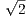 thenr′= -r*.
31 Reference [?]: Quantum-state preparation and macroscopic entanglement in gravitational-wave detectors
31.1 Important Information
31.1.1 Symmetrized time-domain two-point correlation function
We can define the single-sided (cross-) spectral density Sab from this as
31.1.2 Random other stuff
For equation 22, if Ωk is real then -1∝ e-iΩktSign(t) if Ωk= a + ib ∈ ℂ then
and so IFF Im< 0 does -1 have support for only positive time.

 †Ô which leaves the physics invariant (see
section 5.1.2). Under this transformation, (using that = 2πδ)
†Ô which leaves the physics invariant (see
section 5.1.2). Under this transformation, (using that = 2πδ) 
 1 and ϵ2 that satisfy
1 and ϵ2 that satisfy  = ckse-iωt can be interperted as the complex amplitude of the mode with wavevector and polarization index
s and cks is the projection of k along the polarization vector ks. k is defined from the general expression of the vector
field in a free field with no sources of sink:
= ckse-iωt can be interperted as the complex amplitude of the mode with wavevector and polarization index
s and cks is the projection of k along the polarization vector ks. k is defined from the general expression of the vector
field in a free field with no sources of sink:  is not Hermitian and (equivalently ei
is not unitary)*.
Howeover, if we make those assumptions we obtain the following relations: *which turns out to be correct (see section 10.7.2. of [?]) and we obtain that
is not Hermitian and (equivalently ei
is not unitary)*.
Howeover, if we make those assumptions we obtain the following relations: *which turns out to be correct (see section 10.7.2. of [?]) and we obtain that
 are called the phase and amplitude quadratures, respectively, because in the classical limit they
correspond to amplitude and phase modulations*) where
are called the phase and amplitude quadratures, respectively, because in the classical limit they
correspond to amplitude and phase modulations*) where ![[ (′)]
ˆacs(t),ˆacs t](definitions90x.png) ≠0 which will contribute noise to the final measurement result. However if the
photodetectors measure the photon number flux:
≠0 which will contribute noise to the final measurement result. However if the
photodetectors measure the photon number flux: ![ˆ
E (x,y;t) = u(x,y,z)C0[ˆac(t)cosω0t+ ˆas(t)sinω0t]](definitions104x.png)
![ˆ
E (x,y;t) = u(x,y,z)C0 [(Ac +ˆac (t))cosω0t+ (As + ˆas(t))sinω0t],](definitions105x.png)
 = 1 corresponds to F- being a creation operator of a photon at the location (see section 1.2 of
[?] or section 12.11 of [?]; latter is much more oriented towards the subject of localizing photons). So this
operator is very important because most detection of photons happens by absorption via the photoelectric
effect.
= 1 corresponds to F- being a creation operator of a photon at the location (see section 1.2 of
[?] or section 12.11 of [?]; latter is much more oriented towards the subject of localizing photons). So this
operator is very important because most detection of photons happens by absorption via the photoelectric
effect.
 , t will be
, t will be
 , which is
called the photon density operator because
, which is
called the photon density operator because 

 at r (see Fig. 4)? We have that
at r (see Fig. 4)? We have that 
![( ) ⟨ ⟩
Θ(N,M) k ,s ,...,k ,s ;k′,s′ ,...,k′,s′ = a† ...a† a ′ ′...a ′′
1 1 N N M M 1 1 ( k1s1) kNsN kMsM k1s1
(N,M)( ′ ′ ′ ′) -1-- N+M ∫ (N,M )( ′ ′ ′ ′ ′ ′)
=⇒ Θ k1,s1,...,kN ,sN ;kM,sM ,...,k1,s1 = L3∕2 Γ r1,t1,i1,...,rN ,tN ,iN ;rM,tM,jM ,...,r1,t1,j1
M M [ ( ) [ ( )] ]
× ∏ ∏ --1----1′- × (ϵk s ) ϵ*′ ′ exp i ⃗kn.⃗rn - k′.r′ - ωntn + ω′t′ d3rnd3r′ .
n=1m=1 l*(kn)l(km) n n in kmsm jm m m m m m](definitions169x.png)
 is a functional only of the set
of moduli and vice -versa. The same holds for the correlation functions Γ.
is a functional only of the set
of moduli and vice -versa. The same holds for the correlation functions Γ.
 = 1) ([?] section 12.7.2).
= 1) ([?] section 12.7.2).
 = ∫
ϕδd and U ≡∑
ks2.
= ∫
ϕδd and U ≡∑
ks2.

 and a
more general definition of the displacement operator
and a
more general definition of the displacement operator  = ℏ∕2ω) so that the deviation from classical behavior for a
large coherent state is negligible. ([?] section 11.5).
= ℏ∕2ω) so that the deviation from classical behavior for a
large coherent state is negligible. ([?] section 11.5).

 ) and we have that ∫
ϕd2v = 1.
If ϕ behaves like a normal probability distribution (i.e. is non-negative and is not more singular than the delta function)
then - by definition - we have a classical state of light (the idea is that coherent states are analaguous to a classical field of
complex amplitude v so a distribution of them is also classical). Another consequence of the definition is that
(ignoring the vacuum state for which ϕ
) and we have that ∫
ϕd2v = 1.
If ϕ behaves like a normal probability distribution (i.e. is non-negative and is not more singular than the delta function)
then - by definition - we have a classical state of light (the idea is that coherent states are analaguous to a classical field of
complex amplitude v so a distribution of them is also classical). Another consequence of the definition is that
(ignoring the vacuum state for which ϕ = δ2
= δ2 ), p (probability of n photons) is always > 0 for a classical
state.
), p (probability of n photons) is always > 0 for a classical
state.
![[ ]
W (x,p) = Tr eixˆX+ipˆPˆρ](definitions270x.png)

 on the vacuum state. The ideal squeezed state is obtained by
acting D
on the vacuum state. The ideal squeezed state is obtained by
acting D S on the vacuum state and has been called such because of its simple properties. It is denoted by
S on the vacuum state and has been called such because of its simple properties. It is denoted by
 is given by
is given by
 is the Heisenberg picture of  under the action of H0 alone and CAx is a c-number called the time-domain
susceptibility and is given by
is the Heisenberg picture of  under the action of H0 alone and CAx is a c-number called the time-domain
susceptibility and is given by  contains a classical part , which depends on the classical
observable G to be measured, and some quantum noise due to the probe, the detector and their mutual
interaction.”
contains a classical part , which depends on the classical
observable G to be measured, and some quantum noise due to the probe, the detector and their mutual
interaction.”
 , satisfy
, satisfy  j of pulse j (assume that = 0), where j ∈ ℤ is the pulse number, is modified as the pulse reflects off the
mirror:
j of pulse j (assume that = 0), where j ∈ ℤ is the pulse number, is modified as the pulse reflects off the
mirror:  j∕2Fkp posseses an RMS uncertainty of Δxfl = Δϕ∕2Fkp, where Δϕ = , and it
represents the measurement noise*
. Assume that the noise introduced by the detector is negligible so that Δϕ dominates and so *Upon each reflection, each light pulse transfers a back-action momentum to the test mass equal to
j∕2Fkp posseses an RMS uncertainty of Δxfl = Δϕ∕2Fkp, where Δϕ = , and it
represents the measurement noise*
. Assume that the noise introduced by the detector is negligible so that Δϕ dominates and so *Upon each reflection, each light pulse transfers a back-action momentum to the test mass equal to 

 = ∕ and = i*. Moreover, for a coherent state, we have that
= ∕ and = i*. Moreover, for a coherent state, we have that ![[( ) ]
ˆH = ˆH - ˆxG + ˆH - ˆxˆF ,
P D](definitions396x.png)
 as the interaction term. We thus obtain the
following equations of motion in the time domain: where CAB≡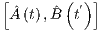 and the superscript (1) denotes time evolution under the total Hamiltonian, the
superscript (0) denotes time evolution under zeroth order Hamiltonian, while the superscript (G) refers to the time
evolution under Ĥ-G*. Moreover, we have that
as the interaction term. We thus obtain the
following equations of motion in the time domain: where CAB≡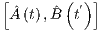 and the superscript (1) denotes time evolution under the total Hamiltonian, the
superscript (0) denotes time evolution under zeroth order Hamiltonian, while the superscript (G) refers to the time
evolution under Ĥ-G*. Moreover, we have that  =
=  + ∫
-∞tdt′Cx
+ ∫
-∞tdt′Cx x
x G*, where
Cx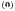x
G*, where
Cx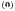x = Cxx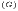*. We thus obtain that
= Cxx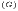*. We thus obtain that  x
x G, which is the displacement induced on a free probe by G, by ξ
G, which is the displacement induced on a free probe by G, by ξ and assume
that Ĥ and Ĥ are time-independent then we obtain that where RAB = ∫
0∞dτeiΩτCAB and as a shorthand in this section RAB ≡ RAB*.
and assume
that Ĥ and Ĥ are time-independent then we obtain that where RAB = ∫
0∞dτeiΩτCAB and as a shorthand in this section RAB ≡ RAB*.

 Z = 0 ∀t,t′ and CF
Z = 0 ∀t,t′ and CF Z=0 ∀t > t′RZZ = RFZ = 0*.
These conditions can be written as
Z=0 ∀t > t′RZZ = RFZ = 0*.
These conditions can be written as

 ≡Ẑ
≡Ẑ
 ∕RZF,
∕RZF,  ≡
≡ - RFF
- RFF Ẑ
Ẑ ∕RZF, which in the time domain
∕RZF, which in the time domain
 describes the quantum fluctuations in the monitors’
readout variable (as it is a quantum operator that will intrinsically have a non-zero variance; e.g. in an interferometer this
noise will be the shot noise). Furthermore, looking at the expression for Ô (eq. 56), we can say that the second term
corresponds to the effective response at time t to the monitor’s back-action force at earlier times t′ < t. The
Cxx term means that this back-action term depends on the probe, as expected. Because of that, we
refer to
describes the quantum fluctuations in the monitors’
readout variable (as it is a quantum operator that will intrinsically have a non-zero variance; e.g. in an interferometer this
noise will be the shot noise). Furthermore, looking at the expression for Ô (eq. 56), we can say that the second term
corresponds to the effective response at time t to the monitor’s back-action force at earlier times t′ < t. The
Cxx term means that this back-action term depends on the probe, as expected. Because of that, we
refer to  as the back-action force. The third term in Ô corresponds to the free-evolution of the probe’s
coordinate and the last term is the displacement induced on the probe by the classical observable we want to
measure.
as the back-action force. The third term in Ô corresponds to the free-evolution of the probe’s
coordinate and the last term is the displacement induced on the probe by the classical observable we want to
measure.

 is a real valued function of
the variable s = iΩ*.
is a real valued function of
the variable s = iΩ*.
 stand for the quadrature
amplitude vectors of N independent EM fields then now the output observable of the detector can be written
stand for the quadrature
amplitude vectors of N independent EM fields then now the output observable of the detector can be written
 is a classical force and the radiation pressure force is given by *where we have assumed that amplitude and phase fluctuations are small. The DC component 2I0∕c can be neglected in the
analysis of the noise as it can be compensated for*.
is a classical force and the radiation pressure force is given by *where we have assumed that amplitude and phase fluctuations are small. The DC component 2I0∕c can be neglected in the
analysis of the noise as it can be compensated for*.
 G
G as and Δ 2 = eâ2
as and Δ 2 = eâ2 - eκâ1. We identify the first part as the shot noise:
- eκâ1. We identify the first part as the shot noise:
 sh = e2iΩτâ2, which arises from the phase-quadrature fluctuation of the input optical field and has a flat spectrum
2 for a
vacuum state:
sh = e2iΩτâ2, which arises from the phase-quadrature fluctuation of the input optical field and has a flat spectrum
2 for a
vacuum state:  , and , respectively. And so we obtain from
62 that
, and , respectively. And so we obtain from
62 that 
 = N and N
= N and N is statistically independent of N if t≠t′ (proof is given in the appendix
of [?]). The above equation can also be written in differential form by noticing that N
is statistically independent of N if t≠t′ (proof is given in the appendix
of [?]). The above equation can also be written in differential form by noticing that N ∕dt1∕2 = N. Defining the
Gaussian white noise process by
∕dt1∕2 = N. Defining the
Gaussian white noise process by  , which is assumed to be statistically independent of v for all t′≤ t (a force F in the
future is not going to affect v at the present time). Newton’s equations give (after dividing by the mass m):
, which is assumed to be statistically independent of v for all t′≤ t (a force F in the
future is not going to affect v at the present time). Newton’s equations give (after dividing by the mass m):
 is not an additional
assumption because the definition of F as a zero mean function that is uncorrelated with v for t′≤ t
implies a continuous Markov process (v has to be a ’continous’ random variable) of the form 70. To find the
expressions of τ and c we note that the velocity of the particle must be Maxwell-Boltzmann distributed:
v = N. Moreover, the displacement of the particle must exhibit the experimentally diffuse observed
behavior: (note that this is mathematically true if τ is very small from a macroscopic viewpoint - just invoke the zero-tau theorem -
[?] section E). These observations have to match the solution to an O-U process, obtaining that τ = DM∕kBT and
c = 22∕D [?]. Recalling the definition of τ we obtain that γ = kBT∕D. Moreover, we have that
is not an additional
assumption because the definition of F as a zero mean function that is uncorrelated with v for t′≤ t
implies a continuous Markov process (v has to be a ’continous’ random variable) of the form 70. To find the
expressions of τ and c we note that the velocity of the particle must be Maxwell-Boltzmann distributed:
v = N. Moreover, the displacement of the particle must exhibit the experimentally diffuse observed
behavior: (note that this is mathematically true if τ is very small from a macroscopic viewpoint - just invoke the zero-tau theorem -
[?] section E). These observations have to match the solution to an O-U process, obtaining that τ = DM∕kBT and
c = 22∕D [?]. Recalling the definition of τ we obtain that γ = kBT∕D. Moreover, we have that

 is the absolute value of the Jacobian determinant. Hence,
is the absolute value of the Jacobian determinant. Hence,  . For the complex amplitude representation, we have that
. For the complex amplitude representation, we have that
 2 + 2 = 1 (energy conservation of a beam after it hits a BS). so
2 + 2 = 1 (energy conservation of a beam after it hits a BS). so


 = ∑
k=1∞Ak cos
= ∑
k=1∞Ak cos
 = ∫
-∞∞Ae-iΩt:
= ∫
-∞∞Ae-iΩt: 

 = ∫
-∞∞Φ
= ∫
-∞∞Φ e-iΩt, we obtain that
e-iΩt, we obtain that  cosω0t + ês
cosω0t + ês sinω0t L can related to the noise component at x = 0 by
the equality
sinω0t L can related to the noise component at x = 0 by
the equality 
![1 ∑ ∑ ∘--ℏ--[ ⃗ ]
Aˆ(⃗r,t) = L3∕2 2ωϵ- ˆa⃗ks(t = 0)ϵ⃗ksei(k.⃗r-ωt) + h.c. (8)
⃗k s 0
1 ∑ ∑ ∘-ℏω-[ i⃗k.⃗r-ωt ]
ˆE (⃗r,t) = L3∕2 2ϵ- iˆa⃗ks(t = 0)ϵ⃗kse( ) + h.c.
⃗k s ∘ 0----
1 ∑ ∑ ℏ [ ( ) i(⃗k.⃗r- ωt) ]
ˆB (⃗r,t) = L3∕2 2ωϵ0 iˆa⃗ks(t = 0) ⃗k× ϵ⃗ks e + h.c..
⃗k s=1,2](definitions33x.png)

![[ †( ′) ] [ †( ′)] Ω--( ′)
ˆac(Ω),ˆac Ω = ˆas(Ω),ˆas Ω = 2πω0δ Ω- Ω
[ †( ′) ] [ † ( ′)] ( ′)
ˆac(Ω),ˆas Ω = ˆac(Ω ),ˆas Ω = 2πiδ Ω - Ω (22)](definitions89x.png)
![⌊ ⟨ ˆa (Ω )ˆa (Ω ′)⟩ ⟨ˆa (Ω)ˆa ( Ω′)⟩ ⌋ ( ) [ ]
⌈ ⟨ c c( )⟩symm ⟨ c s( ) ⟩symm ⌉ = 2πδ Ω + Ω′ Scc(Ω ) Scs(Ω)
ˆas(Ω )ˆac Ω ′ ˆas(Ω)ˆas Ω ′ Ssc(Ω ) Sss(Ω)
symm symm ( ′)
≡ 2πδ Ω + Ω S (23)](definitions94x.png)
![[ Ac ]
⃗A ≡ As
[ ]
⃗a ≡ aˆc . (25)
ˆas](definitions107x.png)


![1 [ ]
ˆx(1)(Ω ) = ------------------xˆ(0)(Ω)+ ξ(Ω) + Rxx(Ω)Fˆ(0)(Ω) (54)
1- Rxx (Ω)RF F (Ω) [ ( )]
ˆF(1)(Ω ) = --------1---------Fˆ(0)(Ω) + RFF (Ω )× ˆx(0)(Ω )+ ξ(Ω)
1- Rxx (Ω)RF F (Ω)
ˆ(1) ˆ(0) -----RZF-(Ω)------[ (0) ˆ(0) ]
Z (Ω ) = Z (Ω )+ 1- Rxx (Ω)RF F (Ω) xˆ (Ω)+ ξ(Ω) + Rxx(Ω)F (Ω)
= ˆZ(0)(Ω )+ R (Ω)ˆx(1)(Ω ),
ZF](definitions429x.png)